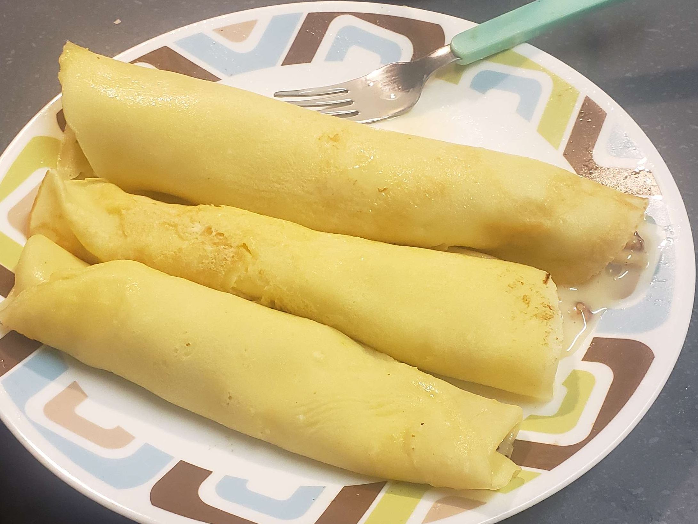

back to Index
I made crepes :>
they were pretty easy, and it was just things i already had

Ingredients
1/2 cup of flour
3/4 cup of milk
sugar to taste
1 1/2 eggs
1 tbs oil
cooking
put all the ingredients in a bowl and use a whisk to combine them until it gets bubbley, then let it sit while you make your sauce. put a pan on medium heat (like a 7 out of 10) now put some oil on the pan and pour the batter slowly until it reaches the dies of the bottom of the pan, let it cook until it's almost solid on top, then flip it. cook that side for like 30 seconds then move it to a plate. The number of crepes will depend on your pan size.
THE SAUCE
sauce is unnessesary, but it makes it way better, you can always use syrup or nutella tho
Ingredients
sweetened condensed milk (about half a can?)
walnuts
cooking
put the sweetened condensed milk in the microwave for 30 seconds until it's runny, then toss in the walnuts and mix it up. that's all.
combining
put the crepe on the plate and load the sauce into the middle and fold around it for traditional style (in the picture) or do it however you want, you can make a stack and put the sauce on top if you want :p
notes
to apply oil to the pan i use a spray bottle filled with vegetable oil
sugar to taste should be somewhere around 1-3 tbs, i keep my sugar in a mason jar and sprinkle it in
half an egg is weird but if you make it with some scrambled eggs you can easily just add the other half to that, i put it in a bowl, scrambled it and poured half into my bowl